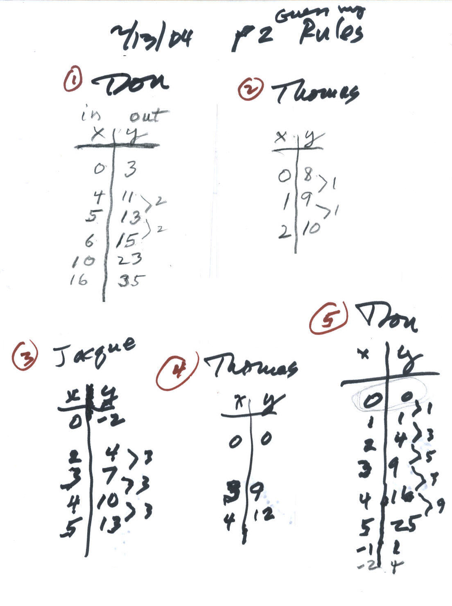
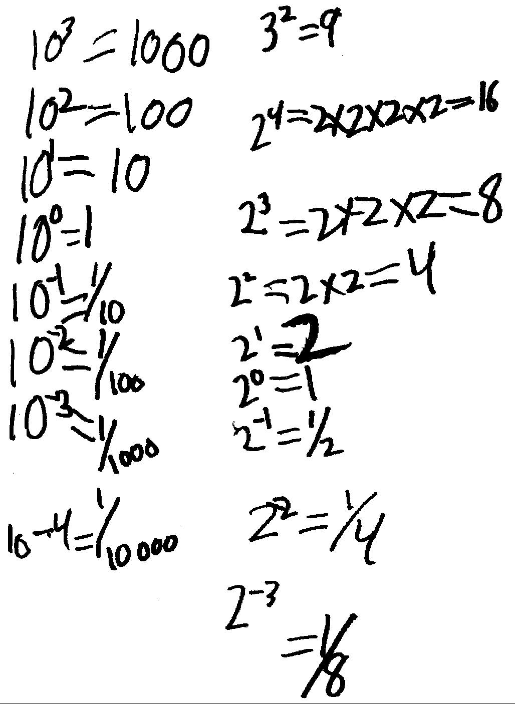

Don works with Thomas, age 8, from Idaho
24
December 2003 Don received this email: "Hi Don,
We bought a new computer for Thomas to use for this, and we will set it up this
weekend. Quest is coming out on Tuesday of next week to set up our DSL line so
we will have faster internet access. Will you be around next week? If so,
maybe we can test our connection on Tuesday afternoon or Wednesday.
We also received the books and materials you sent us -- they are great! Thomas
is very excited to get started.
Thanks for checking in. I hope you are enjoying the holidays!
Jacque"
On 16 January 2004 Don started work with Thomas. Don had Thomas graph x + y = 8 (below) on the 1/2" graph paper. As he found pairs of numbers that added to 8 he plotted the points that correspond to these pairs of numbers. He saw a pattern to the points and went into the negatives, like (9, -1) and he knew that 9 + -1 = 8. He also was able to find the pairs of numbers for points that were between the integral points, like (4 1/2, 3 1/2) would work because 4 1/2 + 3 1/2 = 8.
Notice: Thomas had the numbers correct on the axes here.
Then Don ask Thomas to make up some equations to graph for next time, that would be a little different. He made up the following equations:
x + y = 82
x - y = 2
x - y + 5 = 7 (which is equivalent to the one above!)
x/y = 1/2
That was a fine group of equations to graph!
Then Don gave Thomas some equations to solve (make them true). He did the first 2 easily and had the last one to do for next time.
Don knew he would need a much harder one, so he gave him 3x + 5 = 19! And its solution above was faxed to Don. Don needs to have Thomas NOT use the regular multiplication sign when using x as a variable; 3x means 3 times whatever you put in for x.
Fine job Thomas!!
23 January 2004.
Thomas and Don worked on the partial sums of the infinite
series
 ,
which are 1/2, 3/4 , 7/8, 15/16, .., 1023/1024... . Thomas
agreed that these numbers are increasing and getting closer to 1. They graphed
the number of terms added vs. the partial sums to really see
them
approaching 1. Thomas made the mistake of counting 8 lines instead of 8 spaces
for 1/2 on the graph below,
but this was fixed. Of course the partial sums never get to 1, because Thomas said each fraction
is one of the fractions less than 1, like 31/32 = 1 - 1/32.
,
which are 1/2, 3/4 , 7/8, 15/16, .., 1023/1024... . Thomas
agreed that these numbers are increasing and getting closer to 1. They graphed
the number of terms added vs. the partial sums to really see
them
approaching 1. Thomas made the mistake of counting 8 lines instead of 8 spaces
for 1/2 on the graph below,
but this was fixed. Of course the partial sums never get to 1, because Thomas said each fraction
is one of the fractions less than 1, like 31/32 = 1 - 1/32.
Then Thomas worked on graphing one of the equations he made up last time x-y=2. Don wasn't able to see in the webcam picture, the mistakes Thomas made on his first attempt, until his graph was faxed by his Dad (below). He had the pairs of numbers correct. Thomas made 2 mistakes, he numbered the axes with the numbers in the spaces, instead of on the lines and Don thinks he was counting lines instead of spaces. So for the point 4,2 Don showed Thomas where it should have gone with the circled point
Thomas' first graph of x - y = 2
30 January: Don went over Thomas' graph of x - y = 2 very carefully with him so he could correct it; his new version is below:
And Thomas knew that 1 - -1 = 2 and 0 - -2 = 2 and -1 - -3 = 2 . He told Don that subtracting a negative number is like adding a regular number!! Don has 8th & 9th graders that are not sure of this!
Don asked Thomas whether he wanted to do another graph or do something new. "Something new", he said. Don showed Thomas about squaring a number, like 52 = 5x5=25 and he was able to write 102 = 100. Thomas knew that 4-5=-1. Then Don started him on solving quadratic equations. In finding the two numbers for x2 - 5x + 6 = 0, he tried 5 (ended up 6 away from 0), then 3, which made it true, so 3 was one of the answers. He then tried 11 (ended up 72 away from 0), 1 (ended up 2 away from 0), 6 (ended up 12 away from 0) and he finally found 2 worked. So the answers or solutions for the quadratic equation x2 - 5x + 6 = 0 were 3 and 2 and Don wrote these in the wiggly brackets {3,2}. They talked about how 3 and 2 were related to 5 and how 3 and 2 were related to 6. Thomas saw that 2+3 = 5, the number multiplied by x and 2x3 was the adding number. In the next equation x2 - 8x + 15 = 0 he tried 4 first which didn't work. He thought 4 + 4 = 8, but Don said there are other numbers that add to 8 and what do the numbers multiply to get? He immediately said 5 and 3! He did one more and Don left him with 4 other quadratic equations to do for next time. His Dad faxed these to Don:
terrific job, Thomas!
6 February: Thomas made up 2 quadratic equations for Don to do. One was x2 - 12x + 27 = 0 which Don answered {9,3}.
Then Don played the Magic Number game with Thomas. He showed him how it works by counting in the binary system.
Thomas was to finish the binary counting to 31, then make the set of cards.
Way to go, Thomas!
13 February: Don asked Thomas if he could make up a set of cards for base 3, where the place values are .. 81 27 9 3 1.. Could he count to 26 in base 3? How many cards to go from 1 to 26? What numbers would be on each card? He left him to think about this.
Don started Thomas on Guess My Rule games; they put the input and output on one 3x5 card and the author of the rule put the written rule on the back of the card. Don started with #1 below. "Give me a small number. I'll put your number in my machine, and give you the output number. You try to figure out what my machine does to your number". Thomas started with 16, a big number, and the machine gave back 35. Don at one point suggested they do a few consecutive input numbers, like 4 5 and 6. And the 0 was a good one to try. Thomas after a few, figured Don's rule was 2*x +3=y and showed him the back of the card. Thomas then gave Don one to figure out, #2 below. Don said Thomas' rule could be written x+8=y, and he was right. Now Don made the comment that it didn't matter how they wrote the rule as long as it worked.

Thomas' Mom Jacque then made up a rule (#3 above). And again they looked at the differences in the y-numbers. Thomas figured out the rule as 3x - 2 = y! Thomas made up rule #4 above. And when Don saw (0,0) and (4,9) he thought Thomas' rule was x2 = y, but when Thomas gave Don 12 for the output for 4. he knew that was not Thomas' rule. His Mom figured out this rule. They graphed the first 2 rules (below) to see how the graph was related to the numbers and to the equations.
Then they graphed the function x2 = y. Thomas knew that -1 ' -1 = 1.
Thomas' graph was faxed to Don:
Thomas saw that the points on the parabola go up by odd numbers and figured out that the sum of the first 4 odd numbers is 42 .
Great job Thomas!!!
27 February: Don worked with Thomas on exponents encouraging him to look for patterns:

Don had Thomas make up 2 identities for exponents from examples he did:
5 March: Don showed Thomas how to play The Shuttle Puzzle (see ch.6) and they worked on finding the area within shapes on a geoboard.
12 & 19 March: Thomas worked on cookie-sharing. He shard 3 cookies between 2 people; each person got 1 1/2 = 1/2 + 1/2 + 1/2 = 3/2.
Then Don gave Thomas the problem of sharing 5 cookies between 7 people. He wasn't sure what to do, but he ended up with each person getting 1/2 + 2/10 + 1/70 of a cookie!
Here is what he did: He first cut each cookie into 2 pieces (each is 1/2 of a cookie). He had 10 halves, which he could share between 7 people.
At this point, each person had 1/2 of a cookie and there were 3/2 left over.
Thomas then cut each 1/2 into 5 pieces. Now what was the name of these small pieces? How many of these small pieces make a whole cookie? Well, 5 pieces make a half of a cookie, so he said 10 make a whole cookie. Each small piece was 1/10 of a cookie. Since there were 3 halves, he now had 3x5/10=15/10. Of the 15 tenths, each person could get 2/10, using up 14/10, with 1/10 left over.
At this point, each person had 1/2 + 2/10 of a cookie, with 1/10 of a cookie left over. Thomas then cut the 1/10 into 7 pieces! He figured out that there were 70 of each of these smallest pieces and each piece was 1/70 of a cookie! And each person got 1/70.
At this point each person had 1/2 + 2/10 + 1/70 of a cookie, with no leftover pieces! So the answer to the question, "If you share 5 cookies between 7 people, how many cookies would each person get?" is 1/2 + 2/10 + 1/70 of a cookie!
Do suggested we put these 7 groups together to see if we end up with the 5 cookies that we started with. Thomas added these:
1.) 1/2 + 2/10 + 1/70
2.) 1/2 + 2/10 + 1/70
3.) 1/2 + 2/10 + 1/70
4.) 1/2 + 2/10 + 1/70
5.) 1/2 + 2/10 + 1/70
6.) 1/2 + 2/10 + 1/70
7.) 1/2 + 2/10 + 1/70
He added the 7 halves to get 3 1/2 + (7x 2/10 = 14/10) + (7x 1/70 = 7/70). The 7/70 he said was 1/10. So altogether there were 3 1/2 + 14/10 + 1/10= 3 1/2 + 15/10 = 3 1/2 + 1 1/2 = 5!
Great job Thomas!!!
This just shows that if the teacher listens to the student, some very interesting things can happen! Don thinks this is one of the keys that makes teaching so enjoyable.